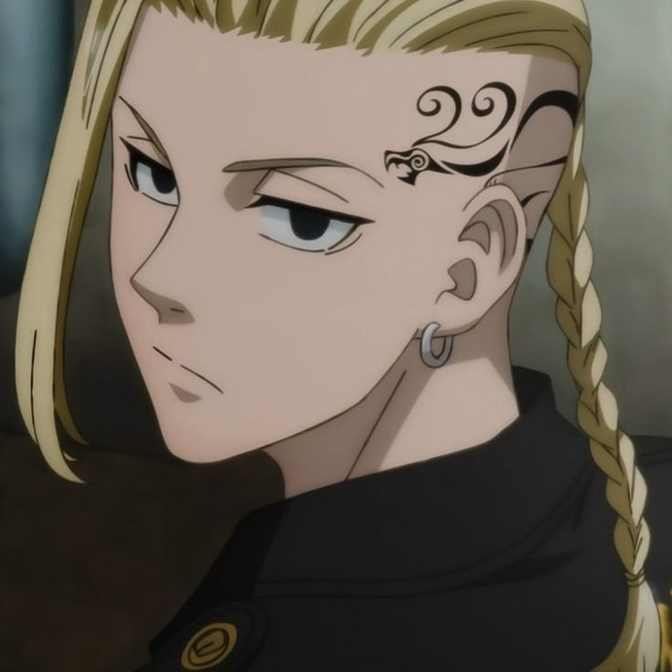

المجلس الإستراتيجي لدوقات المملكة
صفوة الحكام وأصحاب المقاطعات السيادية الكبرى في إمبراطورية النخبة
مرسوم ملوكي: يُمنح الدوقات السيادة الكاملة لإدارة شؤون المقاطعات الاستراتيجية ودعم قرارات العرش العليا.

『 دراكن 💥 』
مقاطعة التنين 🐉
『 زاوفان 🎲 』
مقاطعة ديكاثين 📜
『 توجي 🌑 』
مقاطعة بريم 🌌
『 كازوها 🌕 』
مقاطعة كوزمس 🌌
『 يوتا 🌩️ 』
مقاطعة العواصف الرعدية 🌧️
『 اسكانور 🎭 』
مقاطعة المربع الفضي 🏛️
『 تاتسومي 🎻 』
مقاطعة السيف والشعاب ⚔️

『 بان 🎶 』
مقاطعة الكواكب والموسيقى 🪐